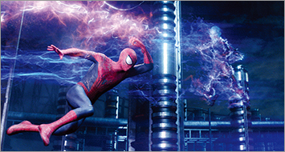
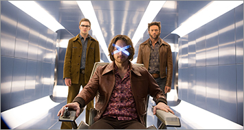
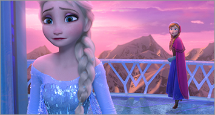

TM & (C)2014 Marvel Characters, Inc. (C)2014 CPII. All Rights Reserved.
上映中
『アメイジング・スパイダーマン2』
世界はスパイダーマンを失うのか？
スパイダーマンを抹消すべく次々に現れる３強敵！
史上最大の戦いが始まる！
ピーター・パーカーはスパイダーマンとしてＮＹの人々を守り、1人の男性として恋人グウェンを愛する人生を満喫していた。しかし旧友であるハリー・オズボーンがＮＹに戻り、少しずつその生活に変化が・・・。オズコープ社の電気技師マックス・ディランが事故で変貌した、高圧電流で全てを破滅する電撃魔人エレクトロを始め、強力なサイ型アーマーで全てを粉砕する怪力鉄人ライノ、そして高速グライダーで全てを切り裂く空中怪人グリーン・ゴブリンが、“スパイダーマンのいない世界”を創ろうと、次々と彼の前に立ちはだかる。そしてついに、世界の終わりが近づこうとしていた・・・。
監督：マーク・ウェブ
出演：アンドリュー・ガーフィールド、エマ・ストーン、ジェイミー・フォックス、デイン・デハーン、サリー・フィールドほか

(C)2014 Twentieth Century Fox
上映中
『X-MEN：フューチャー＆パスト』
地球の運命を賭けた最終決戦が今 始まる いまだかつて揃ったことのない夢のX-MENオールスターチームが集結。 総勢9名ものアカデミー賞、ゴールデン･グローブ賞に絡む豪華キャストが出演。 X-MENシリーズを立ち上げたブライアン・シンガー監督があの『アベンジャーズ』をも上回る製作費で放つ特大プロジェクト。全世界売り上げ7000億円を超える超巨大シリーズの頂点を極める究極のスペクタクルが、いま幕を開ける！
2023年．バイオメカニカル・ロボット「センチネル」によって地球は壊滅へと向かっていた。プロフェッサーXは宿敵のマグニートーと手を組み、1973年にウルヴァリンの「魂」を送り込み危機の根源を絶とうする。50年前の自分の肉体に宿り「センチネル・プログラム」の開発を阻止しようとするウルヴァリン。しかしその間も、2023年では暴走するセンチネルの過酷な攻撃で、地球滅亡へのカウントダウンが進んでいた。2023年と1973年。2つの時代で同時進行する激しいバトルは、想像を絶する結末へと向かう━。
監督：ブライアン・シンガー
出演：ヒュー・ジャックマン、ジェームズ・マカヴォイ、マイケル・ファスベンダー、ジェニファー・ローレンス、ハル・ベリー、エレン・ペイジ、イアン・マッケラン、パトリック・スチュワートほか
(C) MMXIII Paramount Pictures Corporation and Regency Entertainment (USA) Inc. All Rights Reserved.
2014年6月13日公開
『ノア 約束の舟』
人類史上最古にして最大の謎「ノアの箱舟」伝説が、いま解き明かされる
ラッセル・クロウと『ブラック・スワン』のダーレン・アロノフスキー監督が贈る壮大なスペクタクル感動巨編！
世界を呑みこむ大洪水を前に、重大な使命を負ったノア なぜノアが選ばれ、彼は神と何を約束したのか？ そして世界の始まりの真実とは──？ ある夜、ノアは眠りの中で恐るべき光景を見る。それは、堕落した人間を滅ぼすために、すべてを地上から消し去り、新たな世界を創るという神のお告げだった。大洪水が来ると知ったノアは家族と共に、罪のない動物たちを守る巨大な箱舟を作り始める。やがてノアの父を殺した宿敵がノアの計画を知り、舟を奪おうとする。壮絶な戦いのなか、遂に大洪水が始まり、ノアの家族と動物たちを乗せた箱舟だけが流されていく。閉ざされた箱舟の中で、ノアは神に託された驚くべき使命を打ち明ける。箱舟に乗ったノアの家族の未来とは？人類が犯した罪とは？そして世界を新たに創造するという途方もない約束の結末とは──？
監督・製作：ダーレン・アロノフスキー
出演：ラッセル・クロウ、ジェニファー・コネリー、レイ・ウィンストン、エマ・ワトソン、アンソニー・ホプキンス、ローガン・ラーマン、ダグラス・ブース

(C)2013 Disney Enterprises, Inc. All Rights Reserved.
2014年6月27日〜7月3日まで １週間限定公開
『アナと雪の女王』4DX3D版
『美女と野獣の』ディズニーが贈る 史上空前のドラマティック・ミュージカル、開幕！
『アナと雪の女王』──それは、運命に引き裂かれた姉妹を主人公に、凍った心をとかす“真実の愛”を描いた感動のドラマティック・ミュージカル。
創立90周年を迎えたディズニーが、アンデルセンの傑作「雪の女王」にインスピレーションを得て、いまを生きる女性たちに向けたまったく新しい物語を作り出した。それは、90年という歴史に紐付いた伝統と、革命的な新しさを兼ね備えた、金字塔と呼ぶに相応しい映画と言える。
魅力的なふたりのヒロイン、息をのむほど美しい雪と氷の世界、ブロードウェイの豪華キャストによる珠玉のミュージカルナンバー。映画を超えた極上の映像体験が、この春、日本を席巻する。
全世界アニメーション映画歴代２位となった『アナ雪』がついに4DX版で登場！
監督：クリス・バック 、ジェニファー・リー
出演：クリステン・ベル（神田沙也加）、イディナ・メンゼル（松たか子）、ジョシュ・ギャッド（ピエール瀧）、サンティノ・フォンタ（津田英佑）、ジョナサン・グロフ（原慎一郎）
(C)2014 VILLAGE ROADSHOW FILMS(BMI)LIMITED
2014年7月4日
『オール・ユー・ニード・イズ・キル』4DX3D版
あらゆる軍事力を持ってしても対抗することのできない侵略者により熾烈な襲撃を受けている近未来の地球を舞台に繰り広げられるアクション超大作。
突然、決死の任務に就くことになったウィリアム・ケイジ少佐（クルーズ）は本格的な戦闘を前にあっけなく命を落としてしまう。ところが意識を取り戻したケイジは自分が不可解なタイムループの世界にいて、何度も戦闘と戦死を繰り返しながら……同じ戦いを生き抜かねばならないことに気づくのだった。しかし、特殊部隊の軍人であるリタ・ヴラタスキ（ブラント）と共に敵との戦いを繰り返していく間にケイジの戦闘技術は次第に磨き上げられていく。やがて戦いを続けていくうちに、ふたりは少しずつ敵を倒す糸口を掴んでいくことになる。
監督：ダグ・ライマン
出演：トム・クルーズ、エミリー・ブラント、ビル・パクストン、キック・ガリー、ドラゴミール・ムルジッチ、シャーロット・ライリー、ジョナス・アームストロング、フランツ・ドラメー
(C)2014 Disney Enterprises, Inc. All rights reserved.
2014年7月5日
『マレフィセント』4DX3D版
〜ウォルト・ディズニー創立90周年記念作品〜「眠れる森の美女」の悪役マレフィセントの視点で描かれる、“禁断の呪い”が生んだ究極の愛の物語
ある王国で、念願のロイヤル・ベビー、オーロラ姫の誕生を祝うパーティーが開かれている。招待客たちが次々に祝福に訪れ、城は幸福感で満ちていた。“招かれざる客”である邪悪な妖精マレフィセントが現れるまでは…。そして、彼女はオーロラ姫に恐ろしい呪いをかける─「16歳の誕生日の日没までに、姫は永遠の眠りにつくだろう」─なぜマレフィセントはそのような恐ろしい呪いをかけねばならなかったのか？謎を解く鍵は、人間界と妖精界とのあまりに悲しい戦いの歴史と、マレフィセント自身の封印された過去にあった。マレフィセントの呪いは成就してしまうのか？ そして、呪いがマレフィセントとオーロラ姫にもたらす、驚くべき運命とは…？
監督：ロバート・ストロンバーグ
出演：アンジェリーナ・ジョリー、エル・ファニング